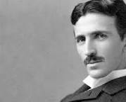
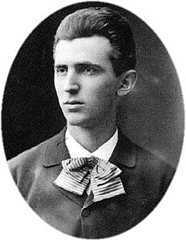

Nikola Tesla (en cirílico serbio: Никола Тесла; Smiljan, Imperio austríaco, actual Croacia; 10 de julio de 1856-Nueva York, 7 de enero de 1943) fue un inventor, ingeniero eléctrico y mecánico serbio nacionalizado estadounidense,123 célebre por sus contribuciones al diseño del moderno suministro de electricidad de corriente alterna.

Tesla, que nació y se crio en el Imperio austríaco, estudió ingeniería y física en la década de 1870 sin obtener un título, aunque adquirió experiencia práctica a principios de la década de 1880 trabajando en telefonía para la empresa Continental Edison, que por entonces lideraba la nueva industria de la energía eléctrica. En 1884 emigró a Estados Unidos, donde adquirió la doble nacionalidad. Trabajó durante un corto tiempo en Edison Machine Works en Nueva York antes de emprender el camino por su cuenta. Con la ayuda de socios para financiar y comercializar sus ideas, Tesla fundó laboratorios y empresas en Nueva York para desarrollar dispositivos eléctricos y mecánicos. Su motor asíncrono de corriente alterna (CA) y las patentes relacionadas con el sistema polifásico, licenciadas por Westinghouse Electric en 1888, le reportaron grandes sumas de dinero y además se convirtieron en la piedra angular del sistema polifásico finalmente comercializado por esta empresa.

En sus intentos por desarrollar inventos que pudiera patentar y comercializar, Tesla realizó experimentos con osciladores/generadores mecánicos, tubos de descarga eléctrica y las primeras imágenes de rayos X. También construyó uno de los primeros barcos con control remoto inalámbrico. Adquirió fama como inventor, mostrando en su laboratorio los logros a numerosas personalidades y patrocinadores adinerados, además de sobresalir por su talento para el espectáculo en conferencias públicas. A lo largo de la década de 1890, Tesla siguió investigando sobre iluminación inalámbrica y la distribución inalámbrica de energía eléctrica por todo el mundo a través de sus experimentos con energía de alta tensión y alta frecuencia en Nueva York y Colorado Springs. En 1893 anunció la posibilidad de establecer comunicación inalámbrica con sus dispositivos y trató de ponerlo en práctica en su proyecto inconcluso de la Wardenclyffe Tower, un transmisor de potencia y comunicación inalámbrica intercontinental, pero se quedó sin fondos antes de poder completarlo.5
Después, Tesla experimentó con otras invenciones en las décadas de 1910 y 1920 con diverso éxito. Tras gastar la mayor parte de su dinero, vivió en varios hoteles de Nueva York, en los que dejó facturas sin abonar. Murió en esa ciudad en enero de 1943.6 El trabajo de Tesla cayó en un relativo olvido después de su muerte, pero en 1960 la unidad de inducción electromagnética en el Sistema Internacional de Unidades fue nombrada tesla en su honor.7 Desde la década de 1990 hay un claro resurgimiento del reconocimiento de sus aportaciones a la ciencia.